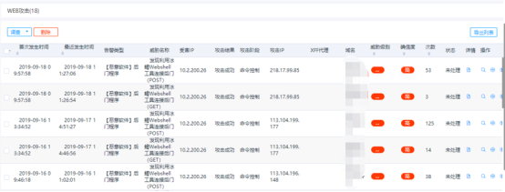
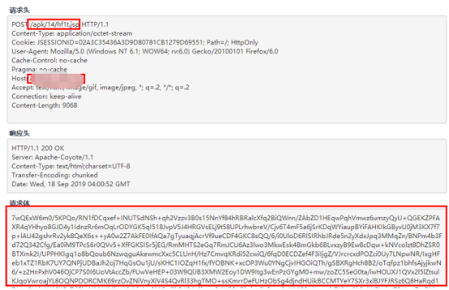
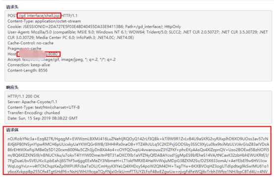
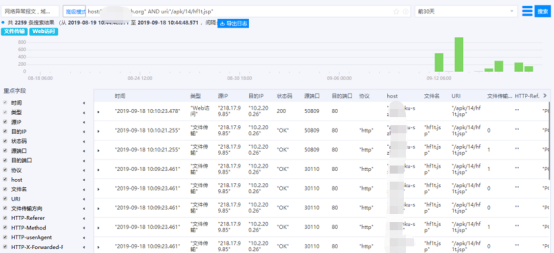
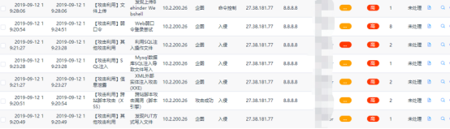
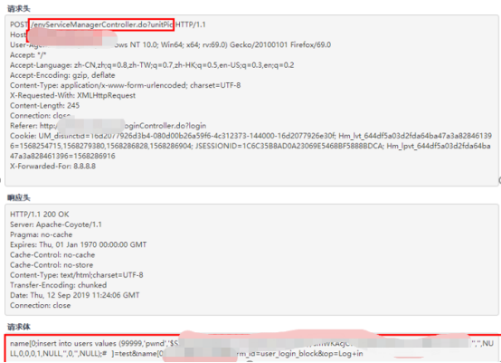
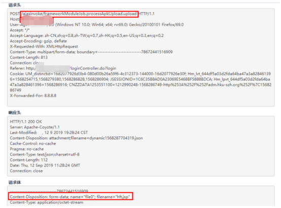
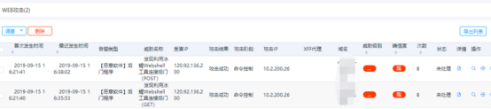
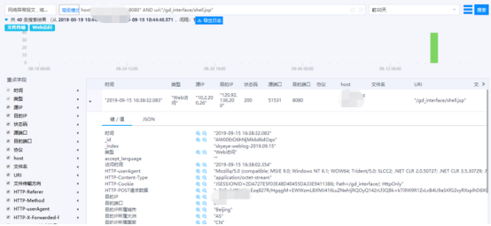

溯源分析¶
攻击者画像：发现利用冰蝎Webshell工具连接后门¶
一、事件描述¶
发现攻击者尝试用冰蝎Webshell工具连接后门。冰蝎是一款使用加密方式连接后门程序的客户端工具。攻击者正在连接并访问后门程序。
受害主机可能已经被植入后门、远控或木马，导致受害主机已经沦陷，成为傀儡机。
二、行为分析¶
通过对传输的数据包进行分析，发现以下1个账号存在弱口令登录行为。天眼告警中发现利用冰蝎Webshell工具连接后门告警

经过天眼告警分析，发现以下两个网站存在冰蝎后门：
xxx.xxx.org
xxx.xxx.xxx.org:8080
其中xxx.xxx.org的webshell地址为：
xxx.xxx.org/apk/14/hf1t.jsp

xxx.xxx.xxx.org:8080的webshell地址为：
xxx.xxx.xxx.org:8080/gd_interface/shell.jsp

查询天眼日志，发现攻击者于9月12日对xxx.xxx.org上传webshell，并持续发起连接。

该攻击者曾发起多种攻击行为，根据告警分析初步推测为使用SQL注入进入管理后台。


关联天眼告警分析，发现攻击者于9月12日19时通过xxx.xxx.xxxx.org:8080/ajaxinvoke/frameworkModuleJob.processApkUpload.upload页面成功上传webshell

查看xxx.xxx.xxx.org:8080相关告警，未发现其他攻击行为，推测为天眼上架前已被植入后门。

查看天眼相关日志，发现攻击者于9月15日进行连接后门操作，且未进行其他网络交互。

三、影响分析¶
攻击IP列表¶
10.2.84.115
受害IP列表¶
10.2.84.115
四、处置建议¶
及时清除发现的 webshell 后门、恶意木马文件、挖矿程序。在不影响系统正常运行的前提下，建议重新安装操作系统，并重新部署应用，以保证恶意程序被彻底清理。